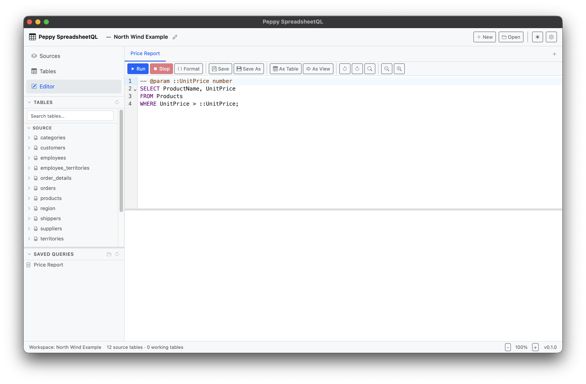
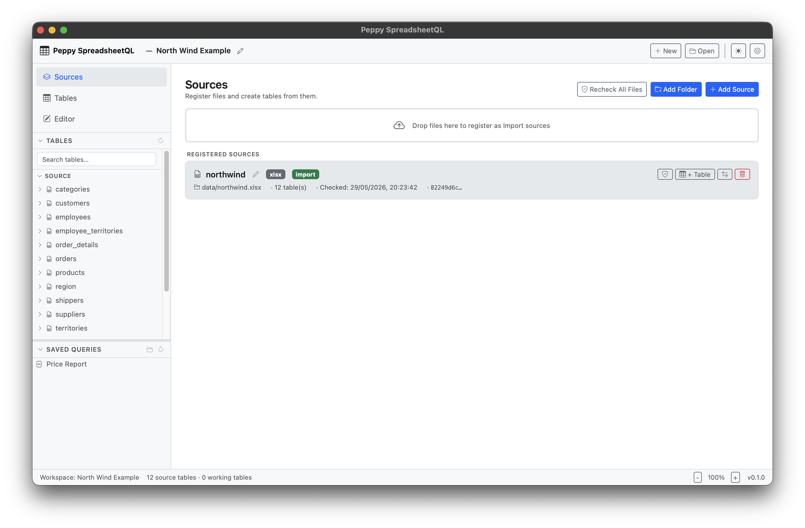
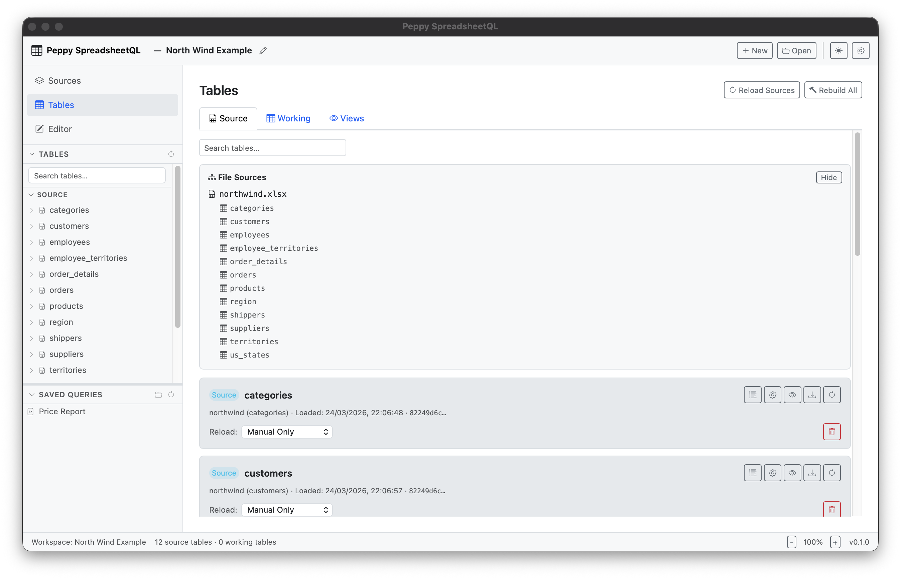

The Idea
Write SQL. Get Answers.
Register your spreadsheet files as tables, write a standard SQL query in the editor, and press Ctrl+Enter. Results appear instantly — no database, no scripts, no IT department.
-- Monthly sales vs. budget — JOIN across two spreadsheet files SELECT s.region, s.department, SUM(s.actual) AS total_actual, SUM(b.budget) AS total_budget, ROUND( SUM(s.actual) * 100.0 / NULLIF(SUM(b.budget), 0), 1 ) AS pct_of_budget FROM sales_jan s JOIN budget_2025 b ON s.region = b.region AND s.department = b.department GROUP BY s.region, s.department ORDER BY pct_of_budget DESC;
App Screenshots
See It in Action
A clean, focused desktop UI designed for daily analytical work.



How It Works
From Spreadsheet Files to SQL Results in Minutes
A guided, five-step workflow that takes you from raw files to queryable tables and exportable results.
-
Create or Open a Workspace
A workspace is a folder on your computer that holds all your config, queries, and derived tables. Open an existing workspace or create a new one in seconds.
-
Register Your Source Files
Add Excel workbooks, CSV files, or Parquet files. Choose a sheet for multi-sheet Excel files. Import a copy into the workspace or reference the file at its current location.
-
Configure Column Schema
Use the Schema Configuration panel to rename columns, override data types, set a header row, and add preprocessing rules (trim whitespace, date format, null replacement).
-
Write SQL in the Editor
The SQL editor has syntax highlighting and autocomplete for your table and column names. Press Ctrl+Enter to run. Results appear in the grid below.
-
Save, Reuse & Export
Save queries to
.sqlfiles organised in folders. Promote query output to a Working Table for use in other queries. Export results to Excel, CSV, JSON, or Markdown.
Supported Formats
Works With Your Files As-Is
No conversion needed. Register your files directly and start querying.
Excel (.xlsx, .xls)
Multi-sheet workbooks supported. Pick which sheet to load, configure column types, and rename columns.
CSV
Any delimiter variant. Apply preprocessing rules to fix data quality issues before loading into DuckDB.
Parquet
Schema is read from the file format directly — no configuration needed. Loads instantly.
Folder Sources
Register an entire folder of CSV or Parquet files as a single concatenated table. Perfect for daily exports.
Export: Excel
Download query results as a formatted .xlsx file ready to open in Microsoft Excel or Google Sheets.
Export: CSV, JSON, MD
Export to CSV, JSON, or Markdown — with configurable NULL display text and header row toggle.
Features
Built for Spreadsheet-Heavy Workflows
Every feature designed for the analyst who works with multiple spreadsheets every day.
DuckDB-Powered Analytics
In-memory columnar analytics via DuckDB — handles millions of rows across multiple files without breaking a sweat. Window functions, CTEs, and full SQL standard supported.
Working Tables
Promote any query result to a Working Table — a derived table stored in DuckDB and rebuilt automatically on workspace open. Chain Working Tables and build complex analytical pipelines.
Workspace Management
Every workspace is a self-contained folder with workspace.meta.json, saved queries, and working tables. Open recent workspaces from the welcome screen. Human-readable, versionable config.
Schema Configuration
Rename columns, override data types (TEXT, INTEGER, REAL, BOOLEAN, DATE, DATETIME), configure a custom header row, and apply preprocessing rules — all from a visual panel with a live 50-row preview.
Preprocessing Rules
Apply per-column rules before type casting: trim whitespace, parse custom date formats, replace null sentinels, or normalise text case. Global rules drop null rows and duplicates across the whole table.
File Change Detection
SHA-256 hash fingerprinting for every registered source file. An amber "changed" badge appears automatically when the file on disk has been modified since the last load. One-click hash refresh for all sources.
SQL Editor with Autocomplete
A professional-grade editor with syntax highlighting and autocomplete for your table names and column names. Save queries as .sql files organised in collapsible folders.
Scrollable Results Grid
Results display in a sortable, filterable grid showing row count, column count, and execution time. Export any result set with a single click.
UTC Timestamps & Timezone Display
All workspace timestamps stored in UTC — your workspace is consistent and correct when moved between machines in different time zones. Displayed in your local timezone in the UI.
Query Parameterization
Define named parameters at the top of any query and reference them throughout with {{ param }} syntax. Swap values — dates, IDs, thresholds — and regenerate reports in seconds without editing SQL.
Incremental File Support
Register an entire folder of CSV or Parquet files as a single growing table. Add new daily or monthly export files to the folder and they are picked up automatically on the next workspace reload — no re-registration needed.
Working Tables
A Working Table is a SQL query result promoted to a first-class table in your DuckDB session. Once created, it behaves just like a source table — you can write FROM my_working_table in any other query, or use it as the base for another Working Table.
Working tables are rebuilt in dependency order every time you open the workspace. If a working table depends on another, Peppy SpreadsheetQL rebuilds the upstream one first — automatically.
- Define once, reuse across all queries in the workspace
- Dependency graph resolved automatically at workspace open
- Stored in
session.duckdb— regenerated from metadata, never stale - Perfect for staging transformations and multi-step analytical pipelines
Use Case
Schema Configuration That Saves You Time
The Schema Configuration panel opens automatically after you register a file. A 50-row live preview updates instantly as you make changes — no surprises at load time.
- Rename columns to clean, SQL-friendly names — source file never touched
- Override inferred data types for any column
- Set a custom header row to skip title or subtitle rows
- Apply per-column preprocessing before type casting
- Global drop-null-rows and deduplication rules
- Cast failure warning when ≥ 20% of rows fail to convert — before committing
- Nullable integer and boolean columns using pandas Int64 and Boolean types
Use Cases
Who Uses Peppy SpreadsheetQL?
For anyone who works with tabular data and writes SQL — without wanting to manage a database.
Finance & Budgeting
JOIN a sales export, a budget file, and a headcount roster in one query. Answer "budget vs actuals by region" in seconds instead of hours of manual VLOOKUP.
Business Analytics
Run GROUP BY aggregations across multiple monthly exports, pivot data with SQL, and export clean results to Excel for stakeholder reports.
Data Engineers
Explore a CSV dump or Parquet file quickly without firing up a full data stack. Verify column types, check row counts, and inspect join cardinality.
Operations Teams
Reconcile weekly operational exports, flag discrepancies between systems, and produce summary reports without any IT involvement.
Daily Export Aggregation
Register a folder of daily or monthly exports as a single table. New files added to the folder are picked up automatically on the next reload.
Privacy-Sensitive Data
Everything runs locally on your desktop. No data is sent to any cloud service. Ideal for payroll, HR, and other sensitive datasets that cannot leave your network.
Interested in Peppy SpreadsheetQL?
Peppy SpreadsheetQL is proprietary software. Contact us to learn more, request a demo, or discuss licensing options.